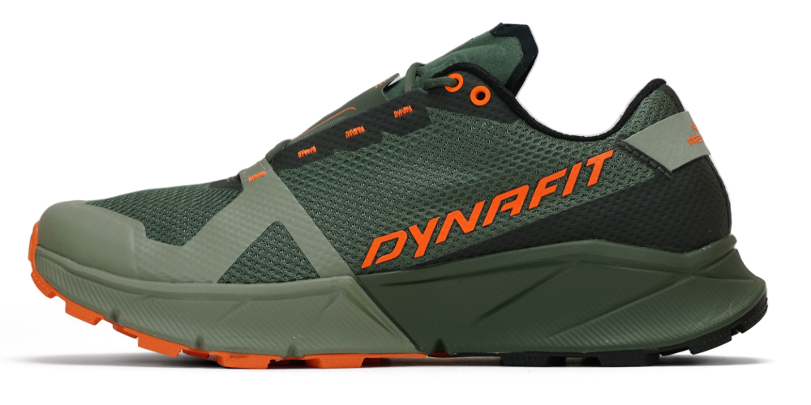

Dynafit Ultra 100

Lichtgewicht, maar robuuste schoen voor ultratrailruns met
uitstekende demping en grip.
Prijs: €175.00

Lichtgewicht, maar robuuste schoen voor ultratrailruns met
uitstekende demping en grip.
Prijs: €175.00

Lichte trailrunning schoen met duurzame grip voor natte en
rotsachtige paden.
Prijs: €129.00
Trailrunning schoen met maximale grip en stabiele demping, perfect
voor technisch terrein.
Prijs: €149.00
Deze webshop is volledig gericht op trailschoenen voor zowel beginnende als ervaren lopers. Hier vind je kwalitatieve schoenen die zorgen voor comfort tijdens trailruns op eender welk terrein.
Mijn naam is Lars Verheyden en ik ben een ervaren ultraloper, trailrunner en bergsporter. Door mijn jarenlange ervaring weet ik precies waar goede schoenen aan moeten voldoen. Dit heeft me geïnspireerd om deze webshop te starten.